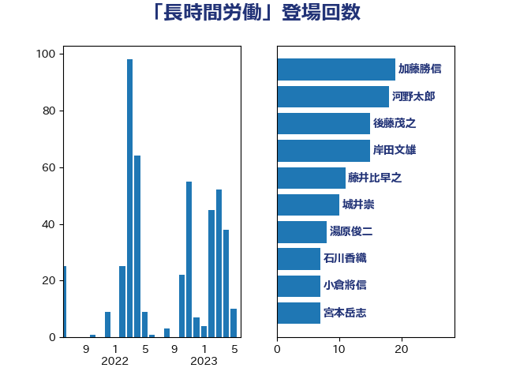

単語「長時間労働」

| 田村憲久 | 自由民主党 | 76 回 |
| 河野太郎 | 自由民主党 | 36 回 |
| 倉林明子 | 日本共産党 | 18 回 |
| 田村智子 | 日本共産党 | 15 回 |
| 後藤茂之 | 自由民主党 | 14 回 |
| 加藤勝信 | 自由民主党 | 13 回 |
| 宮本徹 | 日本共産党 | 9 回 |
| 湯原俊二 | 立憲民主党 | 8 回 |
| 東徹 | 日本維新の会 | 7 回 |
| 浜口誠 | 国民民主党 | 7 回 |
| 石川香織 | 立憲民主党 | 6 回 |
| 阿部司 | 日本維新の会 | 6 回 |
| 伊藤岳 | 日本共産党 | 5 回 |
| 堤かなめ | 立憲民主党 | 5 回 |
| 岸田文雄 | 自由民主党 | 5 回 |
| 川田龍平 | 立憲民主党 | 5 回 |
| 本庄知史 | 立憲民主党 | 5 回 |
| 本村伸子 | 日本共産党 | 5 回 |
| 笠浩史 | 無所属 | 5 回 |
| 藤井比早之 | 自由民主党 | 5 回 |
| 吉良よし子 | 日本共産党 | 4 回 |
| 城井崇 | 立憲民主党 | 4 回 |
| 塩川鉄也 | 日本共産党 | 4 回 |
| 萩生田光一 | 自由民主党 | 4 回 |
| 野田聖子 | 自由民主党 | 4 回 |
| 高橋千鶴子 | 日本共産党 | 4 回 |
| 佐藤英道 | 公明党 | 3 回 |
| 岩渕友 | 日本共産党 | 3 回 |
| 岸真紀子 | 立憲民主党 | 3 回 |
| 柴田巧 | 日本維新の会 | 3 回 |
| 櫻井周 | 立憲民主党 | 3 回 |
| 田村まみ | 国民民主党 | 3 回 |
| 福島みずほ | 社会民主党 | 3 回 |
| 芳賀道也 | 国民民主党 | 3 回 |
| 菅義偉 | 自由民主党 | 3 回 |
| 野上浩太郎 | 自由民主党 | 3 回 |
| 金子恭之 | 自由民主党 | 3 回 |
| 吉川元 | 立憲民主党 | 2 回 |
| 坂本哲志 | 自由民主党 | 2 回 |
| 宗清皇一 | 自由民主党 | 2 回 |
| 岡本三成 | 公明党 | 2 回 |
| 打越さく良 | 立憲民主党 | 2 回 |
| 斉藤鉄夫 | 公明党 | 2 回 |
| 斎藤嘉隆 | 立憲民主党 | 2 回 |
| 末松信介 | 自由民主党 | 2 回 |
| 枝野幸男 | 立憲民主党 | 2 回 |
| 梅村聡 | 日本維新の会 | 2 回 |
| 森屋隆 | 立憲民主党 | 2 回 |
| 森田俊和 | 立憲民主党 | 2 回 |
| 自見はなこ | 自由民主党 | 2 回 |
| 菊田真紀子 | 立憲民主党 | 2 回 |
| 藤田文武 | 日本維新の会 | 2 回 |
| 遠藤敬 | 日本維新の会 | 2 回 |
| 金村龍那 | 日本維新の会 | 2 回 |
| 高良鉄美 | 無所属 | 2 回 |
| おおつき紅葉 | 立憲民主党 | 1 回 |
| 下条みつ | 立憲民主党 | 1 回 |
| 伊藤俊輔 | 立憲民主党 | 1 回 |
| 伊藤孝恵 | 国民民主党 | 1 回 |
| 古川元久 | 国民民主党 | 1 回 |
| 古賀友一郎 | 自由民主党 | 1 回 |
| 吉田はるみ | 立憲民主党 | 1 回 |
| 坂本祐之輔 | 立憲民主党 | 1 回 |
| 宮崎雅夫 | 自由民主党 | 1 回 |
| 宮本岳志 | 日本共産党 | 1 回 |
| 宮路拓馬 | 自由民主党 | 1 回 |
| 寺田静 | 無所属 | 1 回 |
| 小林茂樹 | 自由民主党 | 1 回 |
| 小沼巧 | 立憲民主党 | 1 回 |
| 山崎正恭 | 公明党 | 1 回 |
| 山添拓 | 日本共産党 | 1 回 |
| 岡本あき子 | 立憲民主党 | 1 回 |
| 平井卓也 | 自由民主党 | 1 回 |
| 斎藤洋明 | 自由民主党 | 1 回 |
| 松野博一 | 自由民主党 | 1 回 |
| 梶山弘志 | 自由民主党 | 1 回 |
| 橋本岳 | 自由民主党 | 1 回 |
| 橋本聖子 | 無所属 | 1 回 |
| 武田良太 | 自由民主党 | 1 回 |
| 泉健太 | 立憲民主党 | 1 回 |
| 浅野哲 | 国民民主党 | 1 回 |
| 浜野喜史 | 国民民主党 | 1 回 |
| 清水貴之 | 日本維新の会 | 1 回 |
| 猪口邦子 | 自由民主党 | 1 回 |
| 田島麻衣子 | 立憲民主党 | 1 回 |
| 畦元将吾 | 自由民主党 | 1 回 |
| 盛山正仁 | 自由民主党 | 1 回 |
| 神田憲次 | 自由民主党 | 1 回 |
| 竹内真二 | 公明党 | 1 回 |
| 羽生田俊 | 自由民主党 | 1 回 |
| 西岡秀子 | 国民民主党 | 1 回 |
| 西村智奈美 | 立憲民主党 | 1 回 |
| 赤羽一嘉 | 公明党 | 1 回 |
| 足立康史 | 日本維新の会 | 1 回 |
| 里見隆治 | 公明党 | 1 回 |
| 重徳和彦 | 立憲民主党 | 1 回 |
| 鈴木庸介 | 立憲民主党 | 1 回 |
| 鈴木隼人 | 自由民主党 | 1 回 |
| 長妻昭 | 立憲民主党 | 1 回 |
| 長谷川淳二 | 自由民主党 | 1 回 |
| 階猛 | 立憲民主党 | 1 回 |
| 音喜多駿 | 日本維新の会 | 1 回 |
| 高橋光男 | 公明党 | 1 回 |